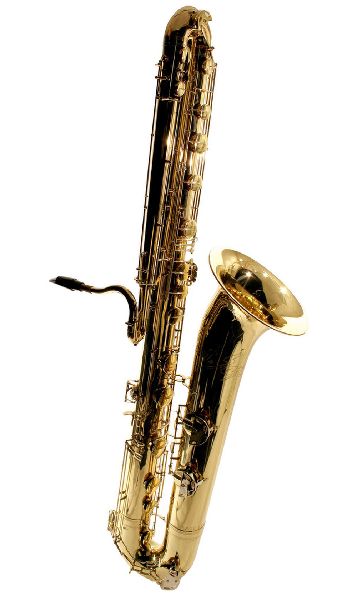
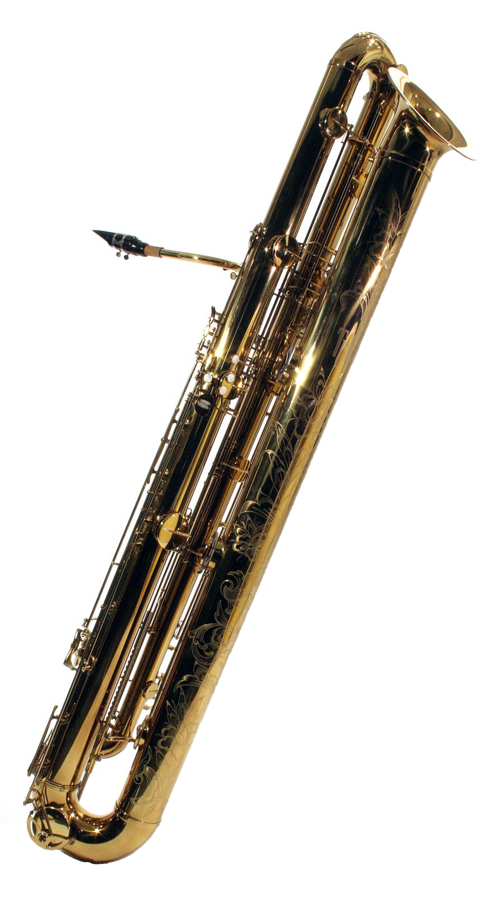

The Saxophone Family > Others > Low-Range
Extreme Low-Range Saxophones
Bass Saxophone

Stats
- Key: B♭
- Range: A♭1-E4
- Size: 135cm
Description
The bass saxophone was the first saxophone Adolphe Sax exhibited publicly. Despite this, bass saxes are very rare today. The bass sax is pitched an octave below a tenor.
Contrabass Saxophone

Stats
- Key: E♭
- Range: C1-A3
- Size: 177cm
Description
The contrabass saxophone is the tallest of all the saxophones, but not the lowest in pitch. It is pitched an octave below a bari sax, but unlike the bari and bass saxes, it cannot be played while seated.
Subcontrabass Saxophone

Stats
- Key: B♭
- Range: A♭0-E3
- Size: 145cm
Description
The subcontrabass saxophone, or Tubax, is the lowest playing member of the saxophone family. Like the soprillo, this instrument is made by Benedikt Eppelsheim. It is designed to be compact, resulting in it being shorter than the contrabass. This instrument's lowest note is only 4 semitones away from the lowest note humans can hear, E0.